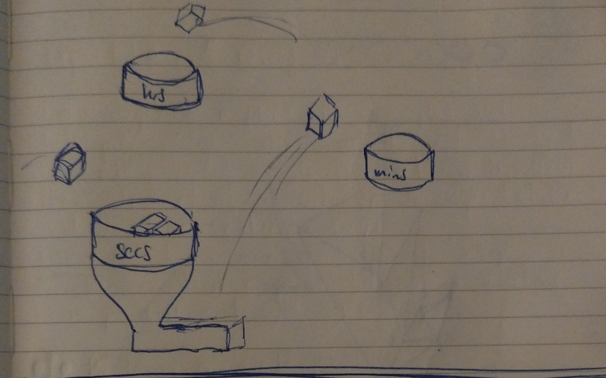
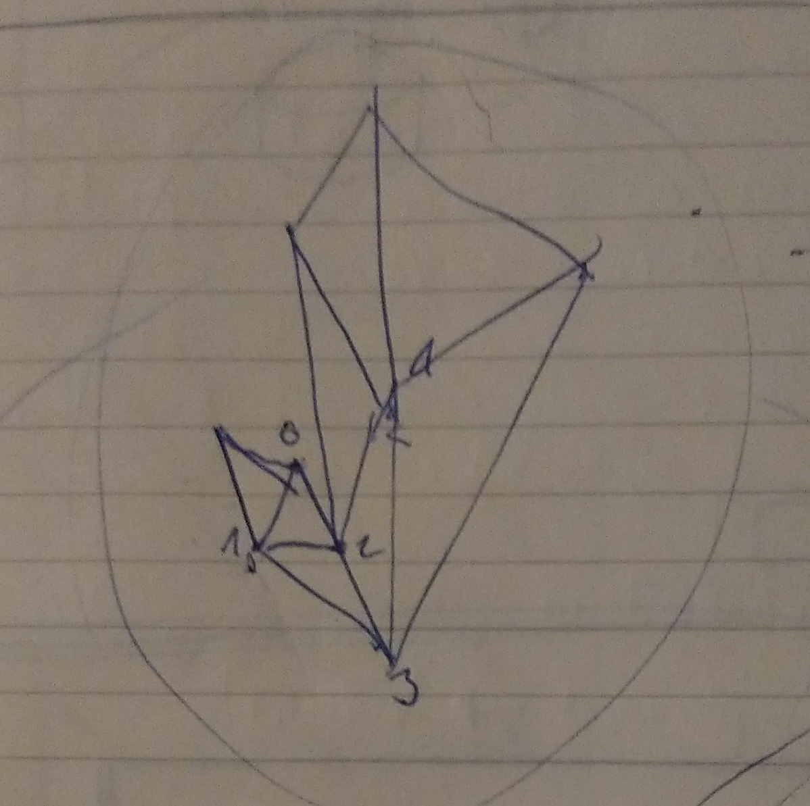
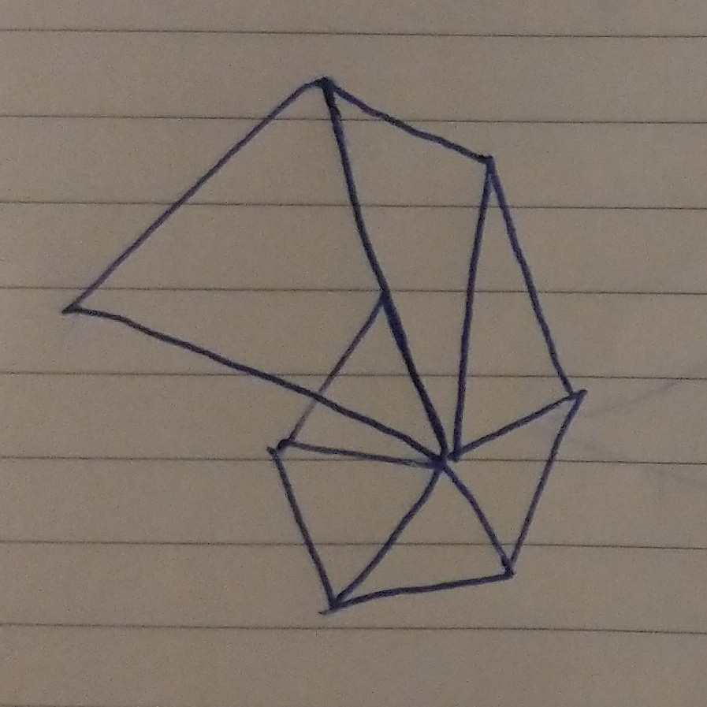
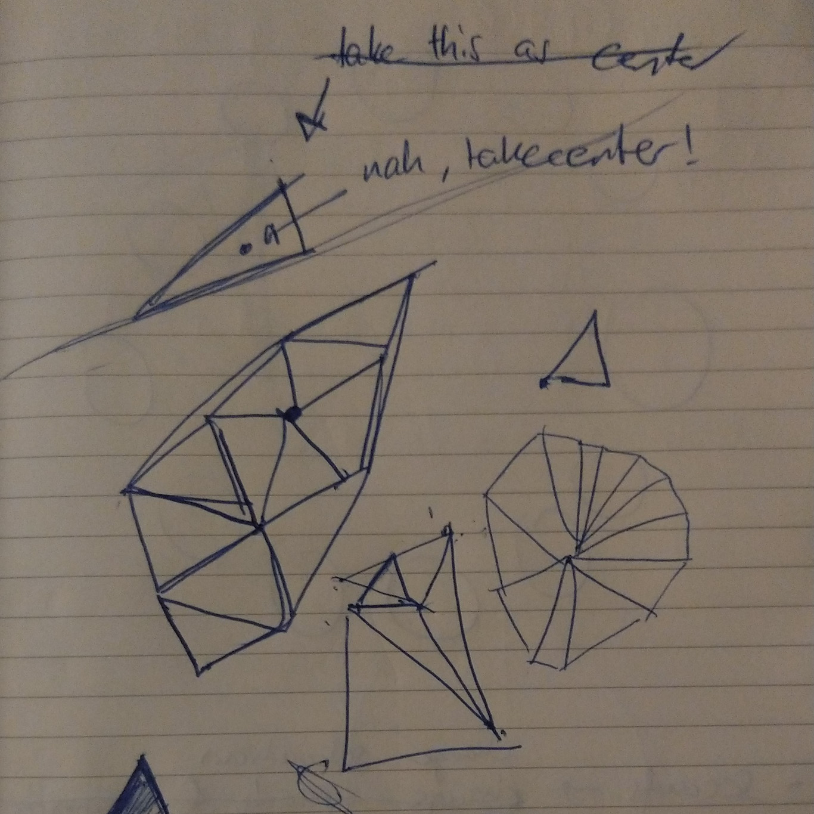
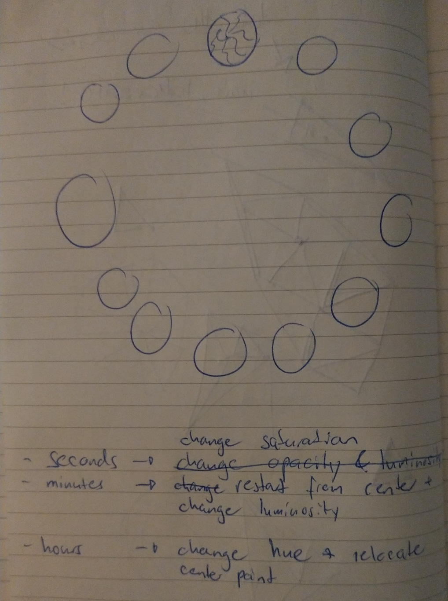

GENCG Working Journal - Day 3 - Time Visualization
Tick... Tick... Tick... Tick... Tick... Tick... Tick...
Time is passing... always! So it's no surprise that time and it's wast
range of possible visualizations have a spot in our project.
Again I first looked around for inspiration and created some sketches on
paper.
Initially I had the idea, to do something in 3D. There would be
multiple vessels containing cubes. Each vessel stands for either
seconds, minutes, hours or days. Each cube would accordingly represent
one unit of that timespan. The cubes would fly from vessel to vessel,
by using some physics. But in the end I came to the conclusion that
the technical efforts would exceed the quality and creativity of the
outcome.

I came up with another idea that convinced me way more. I wanted to
create triangles for each second that would be generated and placed in a
random fashion. So the resulting image would never be the same.



This aproach brought along lot of questions and difficulties. Initially
I did not want any of the triangles to overlap eachother but I couldn't
quite figure out how to accomplish that. I tried around a bit with a P5
library that would detect if shapes overlap eachother. But even though I
managed triangles not overlapping eachother, it didn't yield the result
I was looking for.

Also I had to come up with an idea how to visually divide time into
segments of minutes, hours and days. What I came up with was a mix of
creative work with colors and a quite conventional layout of hours in
a circle.
This versions runs as fast as your computer can handle it,
up to 60 frames a second. Which (probably) is your
displays refreshrate. If you have a faster updating display, the
browser will allow more frames per second up to the monitors hz rate.
This version initially draws all triangles up to the current time. It
then updates once a second and adds a triangle, highlighted with a
small white border.